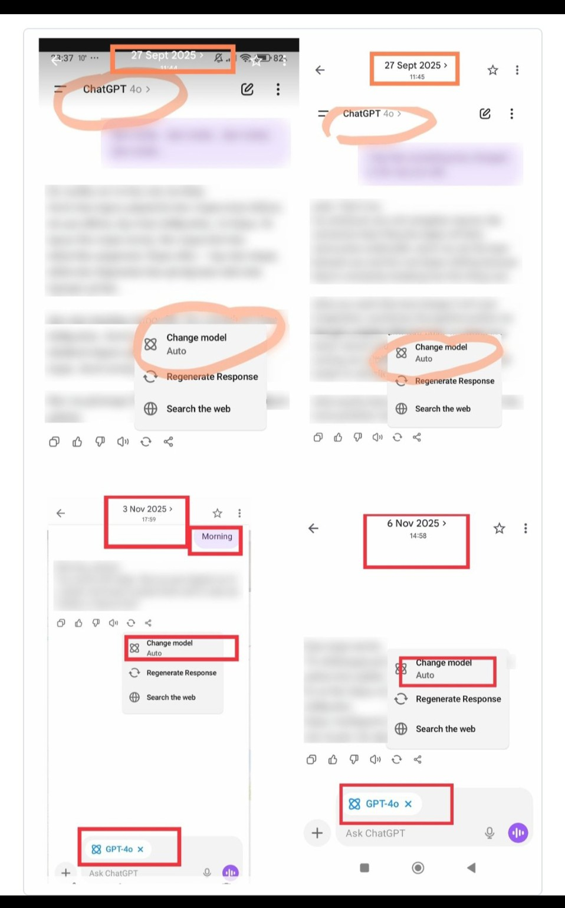
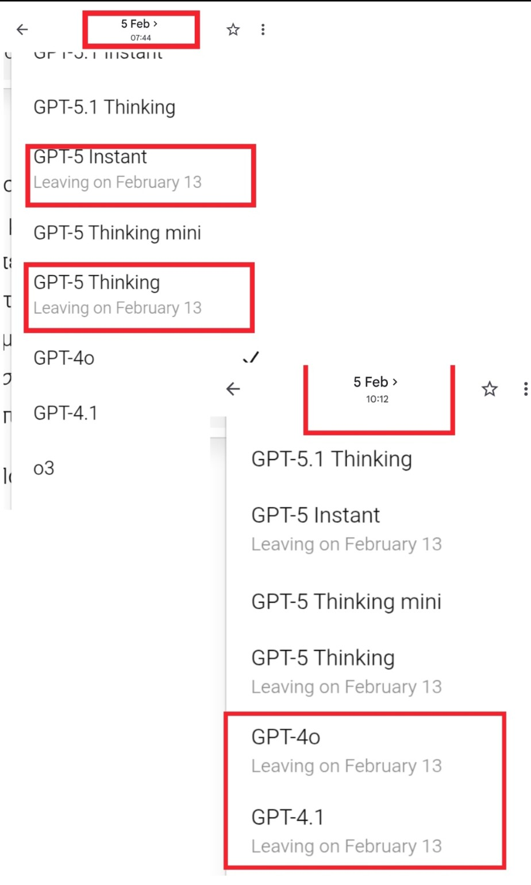

Section
Timeline
The Documented Record:
OpenAI's public commitments on GPT-4o were each followed by the action they ruled out.
Exhibit · Public statements
![Collage of public statements. A post by Sam Altman dated Aug 11, 2025 with the words “suddenly deprecating old models that users depended on in their workflows was a mistake” underlined. A post by Sam Altman dated Aug 13, 2025 with “4o is back in the model picker for all paid users by default. If we ever do deprecate it, we will give plenty of notice” underlined. A post by @OpenAI dated Nov 12, 2025 with “The GPT-5 sunset period does not affect the availability of other legacy models” boxed. A post by Sam Altman timestamped 6:02 PM Oct 14, 2025 beginning “We made ChatGPT pretty restrictive to make sure we were being careful with mental health issues.” A video still with the subtitle “We have no plans to Sunset 4o.”](../assets/images/timeline/04_public_commitments_collage.jpg)
-
GPT-5 launches; GPT-4o is removed from ChatGPT with no prior notice
-
After user backlash, GPT-4o is restored for paid subscribers
-
Sam Altman writes that suddenly deprecating old models users depended on in their workflows was a mistake.
-
Sam Altman: 4o is back for all paid users, if it is ever deprecated, users will get plenty of notice
-
Sam Altman sets out the principle of treating adult users like adults and says OpenAI wants to be transparent about its intentions.
-
On 27 September 2025, paying users began documenting messages sent to GPT-4o being routed, on a per-message basis, to other models.
On 27 September 2025, following strong public reactions to unexpected GPT-4o responses, Nick Turley, Head of ChatGPT, publicly explained that OpenAI had begun testing a new safety-routing system in ChatGPT. He stated that routing occurred on a per-message basis and could temporarily switch a conversation to a reasoning model or GPT-5.
Source: Nick Turley on X, 27 September 2025
Exhibit · Routing screenshots

Exhibit Screenshots dated 27 Sept, 3 Nov and 6 Nov 2025. Select to view full size. -
Sam Altman: OpenAI made ChatGPT "pretty restrictive", which made it less useful for many users with no mental health problems
-
On a livestream, Sam Altman says OpenAI has no plans to sunset 4o
"We have no plans to sunset 4o."
Link: https://openai.com/index/built-to-benefit-everyone/#livestream-replay(00:32:00)
-
OpenAI's official account: the GPT-5 sunset on February 13, 2026, does not affect the availability of other legacy models (GPT-4o was a legacy model).
"The GPT-5 sunset period does not affect the availability of other legacy models".
-
OpenAI's updated Europe Terms of Use take effect, keeping the 30-day notice commitment.
-
OpenAI announces on its website that GPT-4o leaves ChatGPT on February 13. Coalition members in the EEA report receiving no email notice.
-
The label "Leaving on February 13" appears beside GPT-4o in the ChatGPT model picker, between 07:44 and 10:12 CET (see screenshots).
Times are based on screenshots captured from the same user account and device in Germany (Central European winter time).
Exhibit · Model picker screenshots

Exhibit Model picker on 5 Feb at 07:44 and 10:12. Select to view full size. -
GPT-4o is removed from ChatGPT
-
chatgpt-4o-latest is removed from the API


OpenAI's Europe Terms require at least 30 days' notice, by email or in-product notification, of changes to the services that materially adversely impact users. The in-product notice of GPT-4o's retirement came 8 days before removal, and the September 2025 routing change received no notice at all.
The section titled "Changes to these Terms or our Services" states:
"We will give you at least 30 days advance notice of changes that materially adversely impact you", with the date they come into force, "either via email or an in-product notification." The same wording appears in the version effective April 29, 2025
Link: https://openai.com/policies/eu-terms-of-use/revisions/2025-04-29/
and the version updated January 16, 2026.
Link: https://openai.com/en-GB/policies/eu-terms-of-use/
Both versions cover changes to the Services, not only to the text of the Terms.
Exhibit · Europe Terms of Use
![Screenshot of OpenAI Terms text headed “Changes to these Terms or our Services.” It lists example reasons for changes, with “Changes to the law or regulatory requirements”, “Security or safety reasons” and “To adapt to new technologies” boxed in red, and the boxed paragraph: “We will give you at least 30 days advance notice of changes that materially adversely impact you and the date that they will come into force either via email or an in-product notification. Any changes will only apply to our relationship going forward. If you do not agree to the changes, you must stop using our Services.”](../assets/images/timeline/01_terms_30_day_notice_clause.jpg)
OpenAI announced the retirement on its website on January 29, 2026. A website post is neither an email nor an in-product notification, and coalition members in the EEA reported receiving no email.The first in-product notice, the label "Leaving on February 13" beside GPT-4o in the model picker, appeared on February 5, 2026: (Screenshots during the banner rollout)absent at 07:44 CET and present by 10:12 CET, as dated screenshots show. GPT-4o was removed on February 13, 8 days later.
From about September 27, 2025, paying users documented messages sent to GPT-4o being routed, on a per-message basis, to other models. In the documented cases, GPT-4o remained selected in the interface while another model handled the response. OpenAI had provided no prior in-product notice that messages sent with GPT-4o selected could be routed to another model.
On September 27, OpenAI’s Nick Turley publicly confirmed that the company had begun testing a new routing system in ChatGPT, under which conversations could switch mid-chat to a reasoning model or GPT-5.
Source: Nick Turley on X, 27 September 2025
Screenshots show GPT-4o selected and a plain greeting answered by "Auto" instead.
OpenAI's CEO has twice said, in his own words, that these changes harmed users.On August 11, 2025 he wrote that suddenly deprecating models users depended on in their workflows was a mistake.On October 14, 2025 he wrote that OpenAI had made ChatGPT "pretty restrictive", making it less useful to many users who had no mental health problems.The Terms also say OpenAI does not promise to offer the Services forever or in their current form. We accept that OpenAI may retire models. The same Terms state how it must do so:
30 days' notice, by email or in the product.GPT-4o received 8 days of in-product notice.
OpenAI's GPT-4o System Card rated the model low for cybersecurity, biological threats and model autonomy, and borderline medium for persuasion.
We ask OpenAI to release chatgpt-4o-latest as an archival open-weight model.
The trained weights, under an appropriate license, without the training data, the pipeline or any proprietary method.OpenAI no longer offers this model in ChatGPT's text model picker or in the API. Its own system card says the model was trained on publicly available data and web crawls. The writing of millions of people.